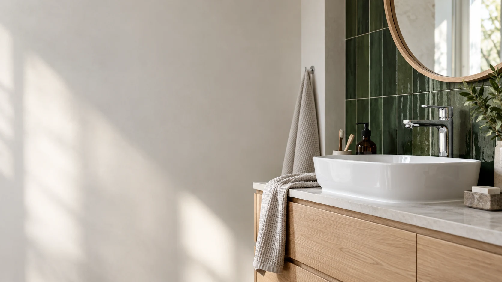
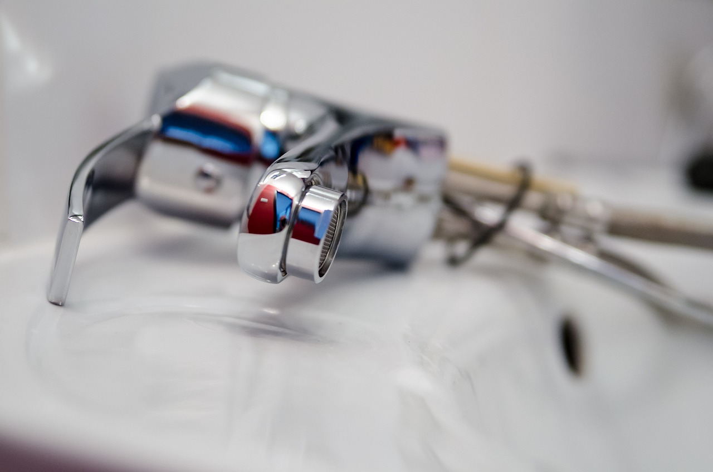
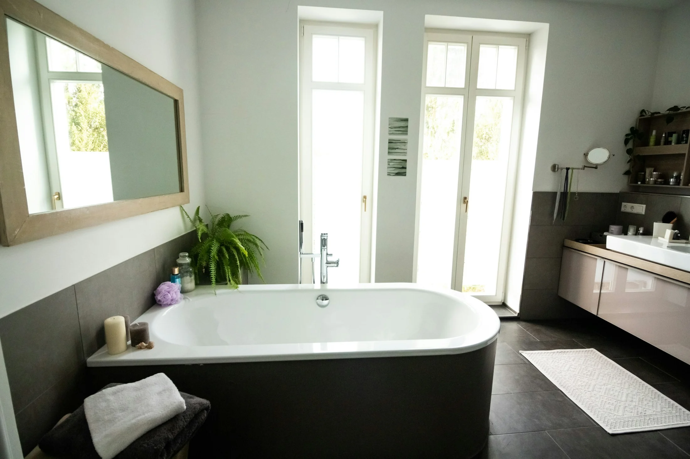

VVS-service
Underhåll, reparationer och installationer av VVS-system för hem, företag och offentliga byggnader.
Läs om vvs-service
VVS-service, värmepumpar och rörinstallationer i Umeå. Personlig kontakt och kostnadsfri offert, från första frågan.
Från en krånglande installation till en ny värmepump. Vi hjälper dig med det som får vatten, värme och vardag att fungera tillsammans.

Underhåll, reparationer och installationer av VVS-system för hem, företag och offentliga byggnader.
Läs om vvs-serviceVi hjälper dig med bergvärme och installation av värmepumpar från Vaillant, Nibe och Thermia.
Läs om värmepumparVatten- och avloppsinstallationer anpassade till fastigheten, dina önskemål och projektets förutsättningar.
Läs om avlopp & rörPersonlig rådgivning om VVS, energieffektiva lösningar, utrustning och underhåll.
Läs om rådgivningMed bergvärme tar en värmepump vara på lagrad energi i marken. Vi hjälper dig att se hur den kan bli en del av ditt hems uppvärmning.
Upptäck våra värmepumparEn vätska cirkulerar i borrhålet och tar upp lagrad värme från berggrunden. Det är början på värmens väg in i huset.
Vi installerar värmepumpar från

Badrumsinspiration
Foto: Julia / Unsplash (öppnas i ny flik)
Vi börjar med fastigheten, dina önskemål och det du vill få gjort.
Planering, personlig kontakt och en dialog om nästa steg.
Anderssons VVS och Energi är en VVS-firma i Umeå som arbetar med installationer, service och värmepumpar.
För oss börjar ett bra arbete med att lyssna. Vi går igenom alternativen tillsammans och anpassar lösningen efter förutsättningarna.
Lär känna AnderssonsKundomdömen publicerade på företagets ursprungliga hemsida (öppnas i ny flik).
Kunnig och noggrann, kan varmt rekommendera Anderssons VVS och Energi!
Mycket kompetenta och trevlig montör!
Hittar du inte svaret? Ring oss så pratar vi om just din situation.
072-528 22 20Vi arbetar med VVS-service, värmepumpar, vatten- och avloppsinstallationer samt rådgivning. Vi hjälper hem, företag och offentliga verksamheter.
På värmepumpssidan arbetar vi med Vaillant, Nibe och Thermia. Kontakta oss så går vi igenom vad som passar din fastighet och dina behov.
Nej, en offert är kostnadsfri. Berätta vad du behöver hjälp med och lämna dina kontaktuppgifter så kan vi ta nästa steg.
Ja, vid behov av jourutryckning ringer du 072-528 22 20. Ring för att stämma av möjligheten till hjälp; använd inte mejl för ett brådskande ärende.
Berätta om dina planer. Vi börjar med ett samtal och en kostnadsfri offert.